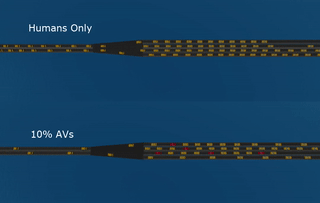

Bottleneck Decongestion using AVs
Lagrangian Control through Deep-RL: Applications to bottleneck decongestion
Authors: Eugene Vinitsky, Kanaad Parvate , Aboudy Kreidieh, Cathy Wu , Alexandre Bayen Intelligent Transportation Systems Conference, 2018

Figure 1: Bottleneck Decongestion
We introduce an autonomous vehicle (AV) based alternative to ramp metering to improve transportation networks. Ramp metering is the standard technique for maximizing the outflow of traffic bottlenecks but is expensive to maintain. Instead, we can take advantage of readily available cruise controllers to optimize the system. Using reinforcement learning, we design controllers that even at at a low penetration rate of 10%, are able to improve the outflow of a small model of the San-Francisco Oakland Bay Bridge.